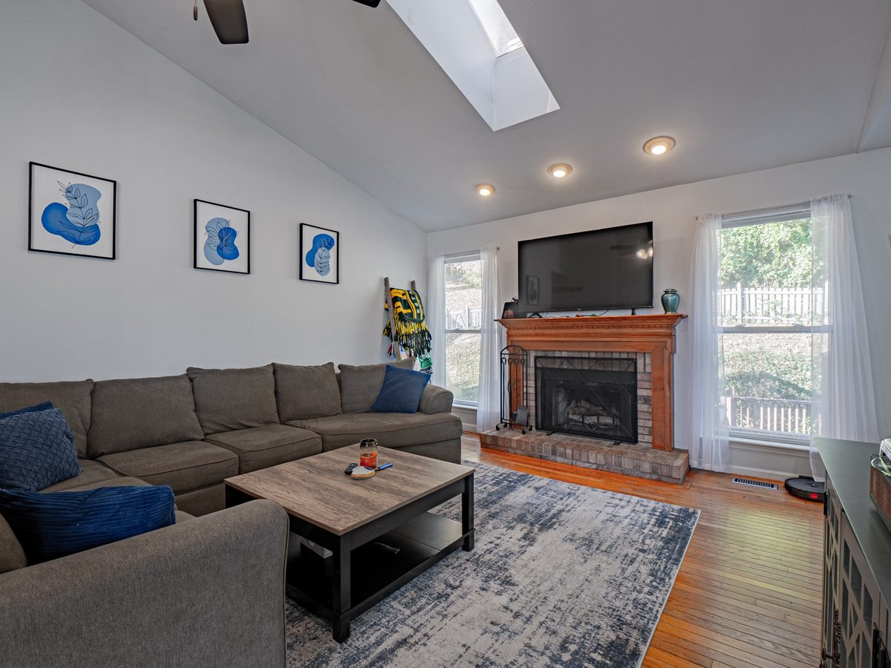
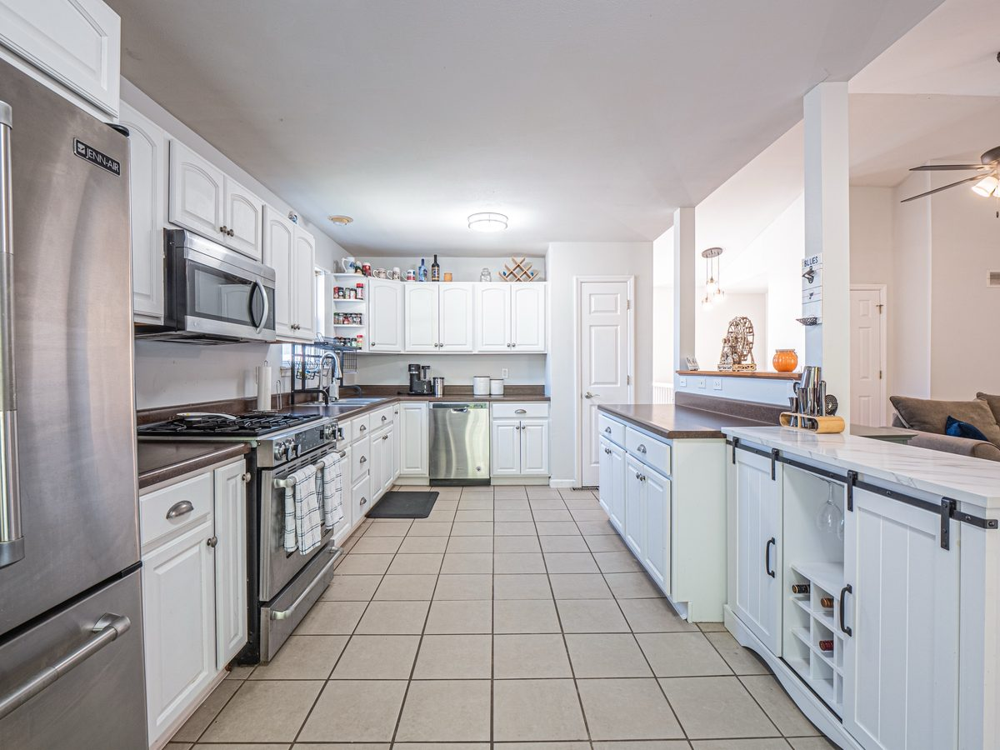

Last updated October 27, 2026
When I list a house, I don’t just copy what comparable homes sold for. At 982 Winter Park Drive in Fenton, we listed at $295,000 in November 2023, had about 20 showings scheduled, received three offers at $300,000 and sold for $302,000. The extra $2,000 didn’t happen by accident. Step into my seat, make the calls, then read how each one played out.
Why list below what you expect it to sell for?
Because the asking price sets what buyers expect when they walk in. I study two numbers on comparable homes: what they were originally listed for and what buyers finally paid. I’ve been tracking that relationship for about six years.
If a home meets or beats the expectations its price creates, buyers are more likely to see extra value and pay more than the advertised price. With Winter Park, I recommended $295,000. I wasn’t telling buyers that was the most the house was worth. I was setting a price I believed would create the right expectations and get buyers to come see it. What a house is likely to sell for and what we should ask for it aren’t necessarily the same number. What 2026 sales show about pricing →
What did 20 scheduled showings tell us?
That the price was reaching active buyers. By November 10, 2023, I was telling another agent we had about 20 showings scheduled, enough to set an offer deadline so every buyer and agent knew when offers would be reviewed.
Those weren’t online views or saves. Buyers were making appointments. A scheduled showing isn’t a completed one and doesn’t guarantee an offer, but it tells me whether the asking price is getting the attention of buyers who are actually shopping. And this was November, not spring. When St. Louis buyers are most active →


How do you compare three offers at the same price?
By the terms, not the number. By November 13 I had three offers, each at $300,000, $5,000 over asking. One stood out because of what came with it:
- Cash, with no appraisal contingency
- An escalation clause allowing the price to rise to as much as $305,000 with qualifying competing-offer evidence
- $5,000 earnest money
- A December 4 closing date
- No request for seller payment on any single inspection item under $1,000
Two offers at the same price can carry very different risk for the seller depending on financing, inspection terms, appraisal terms, contingencies and closing dates. The cash buyer wasn’t depending on mortgage approval or a lender appraisal, and had already shown a willingness to go above $300,000 if we had the evidence the clause required. We did. Comparing multiple offers →
How did an escalation clause turn $300,000 into $302,000?
By applying it the way it was written. On November 13, I sent the buyer’s agent the accepted agreement and an amendment setting the price at $302,000, along with the competing offer that triggered the clause, as the contract’s special agreements required.
An escalation clause lets a buyer raise their price when another qualifying offer meets the conditions written into the agreement. It isn’t permission for the seller to pick any number. I wasn’t calling the buyer’s agent to ask for another $2,000. I was using terms their buyer had already agreed to and providing the evidence to support the increase.
We also wrote personal property into the agreement: the buyer wanted the kitchen refrigerator included. The result was a $302,000 cash contract, $7,000 over asking and $2,000 above the buyer’s first offer.
Why not $305,000?
Because $305,000 was the buyer’s ceiling, not their offer. The clause authorized increases up to that amount when its conditions were met, and the competing-offer documentation supported $302,000.
We could only apply the clause as its terms allowed. That’s why knowing the exact language of an offer matters.
Did the cash buyer still inspect?
Yes, and they accepted the house without asking for repairs. A general inspection was scheduled for November 17 and a sewer inspection for November 20, and the final inspection notice said the buyer was satisfied.
Cash didn’t mean no inspections, and we could easily have locked in a strong price only to face another negotiation afterward. The offer limited repair requests on individual items under $1,000, but we didn’t need to rely on that. Getting a strong contract is one part of the job. Keeping its financial terms intact through inspections is another.
What do you do with an offer that arrives after you’re under contract?
Tell them the house is under contract and pass it to your seller. On November 27, another party contacted me with a subject-to purchase proposal. By then we had a cash contract above asking, inspections were behind us and closing was set for December 4.
I told them so, and said I’d pass the proposal along to my seller. There was no reason to present the house as available when we had a signed agreement on its way to closing. At the start, the job was evaluating competing buyers. By late November, it was getting the accepted contract across the finish line.
When did it close?
December 4, 2023, on schedule and at the agreed price. The buyer completed the final walk-through, and the title company confirmed the sale was fully funded that day.
What did the pricing and negotiation accomplish?
$7,000 over asking, $2,000 of it from the escalation clause, with no repair requests. That’s a gross sale-price comparison, not the seller’s net after commissions, mortgage payoff and other settlement costs.
Winter Park, from listing to closingShow all 9 rowsHide table
| Measure | Result |
|---|---|
| Original asking price | $295,000 |
| Showings scheduled by November 10 | About 20 |
| Written offers presented | 3 |
| Initial price of each offer | $300,000 |
| Accepted buyer’s escalation ceiling | $305,000 |
| Agreed sale price | $302,000 |
| Above asking | $7,000 (2.4%) |
| Increase through escalation | $2,000 |
| Buyer-requested inspection repairs | None |
Would I price the next listing the same way?
I’d use the same analysis, not necessarily the same number. That doesn’t mean picking the same percentage below comparable sales or expecting three offers every time.
It means looking at how the relevant comparable homes were priced and how they performed, and how the house I’m representing compares with what buyers expect at different asking prices. The question stays the same: what asking price sets the right expectations and gives this house its best chance at its market-supported price?
What should sellers take from this sale?
Price on how buyers respond, compare offers by their terms, and remember the sale isn’t finished when an offer is accepted.
Why look at asking prices and sold prices together?
The sold price tells you what a buyer finally paid. The original asking price tells you how that home was positioned when buyers first saw it. Looking at both across several comparable homes shows how buyers respond, which is what told me to enter at $295,000.
Are three offers at the same price equal?
No. One of the three $300,000 offers came with cash, no appraisal contingency and an escalation clause. Those terms made it worth more to the seller, and the escalation clause, backed by the competing offers, is how $300,000 became $302,000.
Is the job done when the offer is accepted?
No. Inspections, appraisal, financing, concessions and closing delays can all change the result. Here the buyer inspected and accepted the house without repair requests, and we closed on schedule at the agreed price.
Questions This Sale Helps Answer
What does “no seller payment for items under $1,000” mean in an offer?
The buyer agrees not to ask the seller to pay for any single inspection item that would cost less than $1,000 to address. Here the buyer ended up requesting no repairs at all.
Should personal property like a refrigerator be written into the contract?
Yes. If the buyer wants an item included, put it in the agreement. Here the kitchen refrigerator was written into the accepted terms.
Does a cash offer skip the appraisal?
A cash buyer doesn’t need a lender appraisal, and this offer had no appraisal contingency. That’s part of why it was worth more to the seller than its $300,000 price alone suggested.
More in this series: Lessons From a Sale · $15,000 over asking with no competing offer · Four offers, a low appraisal and a close at $271,000 · Related: How I work with sellers · Multiple offers on my house · Selling in fall or winter

Grew up in South St. Louis, lived in Dogtown for 6 years, now in South County. You’ll find us at Wellspring on Lindbergh on Sundays. I'm not selling you a house — I'm showing you how to think about buying or selling a house.
One text, email, or call is all it takes to put that experience to work for you.